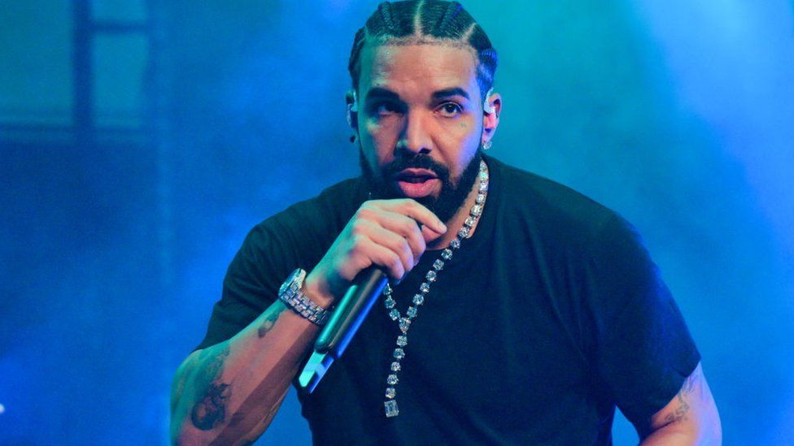

Обрі Дрейк Грем народився 24 жовтня 1986 року у Торонто, Онтаріо. Він — син Дениса Грема. Денис був барабанщиком, який працював з Джеррі Лі Льюїсом, і Санді Гремом (педагог). Два його дядька, Ларрі Грем та Тіна Годжес, також музиканти. Батько Дрейка — афроамериканець з Мемфіса (штат Теннессі), а мати Дрейка — канадська єврейка. Він навчався у єврейській школі, і у нього була бар-міцва. Його батьки розлучилися, коли йому було п'ять років. Він був вихований матір'ю у багатому районі Форест-Гілл у Торонто. Дрейк навчався у школі Forest Hill Collegiate Institute, але рано покинув її, не встигнувши закінчити. Він провів велику частину літа з його батьком у Мемфісі. Дрейк заявив, що розлучення батьків сильно вплинуло на нього: «Я повинен був дуже швидко стати чоловіком і бути опорою для жінки, яку я люблю всім серцем… для мами».
